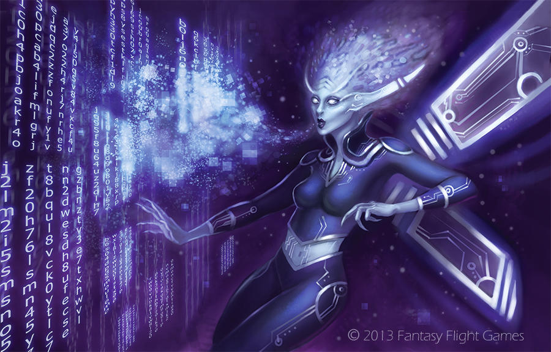
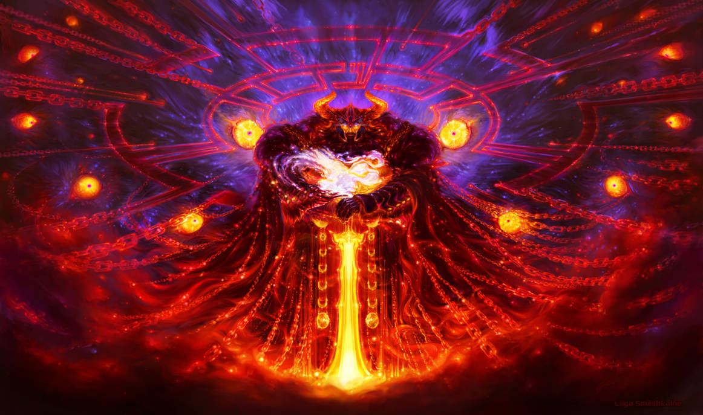

Codex is the netrunner's domain. In Night City its Grimoire cards are program libraries: each one a bundle of quickhacks you can run, named for the runner who wrote it. Spellcast Rolls are Quickhack Rolls, spellcasting is quickhacking, and casting a spell is initializing a quickhack.
Levels 1 and 2 are below. Higher levels follow as the remap closes them.
Ava.EXE
Power Push: Make a Quickhack Roll against a target within Melee range. On a success, they're knocked back to Far range and take d10+2 electronic damage using your Proficiency.
Tava's Armor: Spend a Hope to give a target you can touch a +1 bonus to their Armor Score until their next rest or you cast Tava's Armor again.
Brain Spike: Make a Quickhack Roll (12) to trigger an electronic spike within Far range. If you use it as a weapon, make the Quickhack Roll against the target's Difficulty instead. On a success, deal d6 physical damage using your Proficiency.
Illiat.EXE
Shadowban: Make a Quickhack Roll against a target within Very Close range. On a success, they're Disconnected until they take damage or the GM spends a Fear on their turn to clear this condition.
DDOS: Once per rest, spend any number of Hope and spam electronic attacks that strike a target of your choice within Close range. Roll a number of d6s equal to the Hope spent and deal that much electronic damage to the target.
Encrypted Connection: Spend a Hope to open a line of mental communication with one target you can see. This connection lasts until your next rest or you cast Encrypted Connection again.
Tyfar.EXE
Disrupt Cyberware: Make a Quickhack Roll against up to three adversaries within Melee range. Targets you succeed against take 2d6 electronic damage and must mark a Stress as you superheat their augmentations.
Helper Drone: You initialize a small drone the size of your hand within Far range.
Override Panopticon: Make a Quickhack Roll (13) to disrupt all cameras within Very Close range. This heavily obscures this area and everything in it.

2Codex2⚡Sitil
Incognito Mode: You shift your appearance and clothing to avoid recognition.
Parallela: Spend 2 Hope to initialize this quickhack on yourself or an ally within Close range. The next time the target makes an attack, they can hit an additional target within range that their attack roll would succeed against. You can only hold this on one creature at a time.
Augment Reality: Make a Quickhack Roll (14). On a success, create a temporary visual illusion no larger than you within Close range that lasts for as long as you look at it. It holds up to scrutiny until an observer is within Melee range.

2Codex2⚡Vagras
Encrypted Lock: Make a Quickhack Roll (15) on an object you're touching that can close. Once per rest on a success, you can lock the object so it can only be opened by entities of your choice. Someone with access to quickhacks and an hour of time to study the lock can break it.
Quick Exit: When you have no adversaries within Melee range, make a Quickhack Roll (13). On a success, spend a Hope to create a portal from where you are to a point within Far range you can see. It closes once a creature has passed through it.
Scan: Make a Quickhack Roll. If there is anything electronically hidden within Close range, the roll would succeed against, it is revealed.
Source · Daggerheart Core Rulebook p. 333 (Book of Ava, Illiat, Tyfar, Sitil, Vagras), remapped by the GM